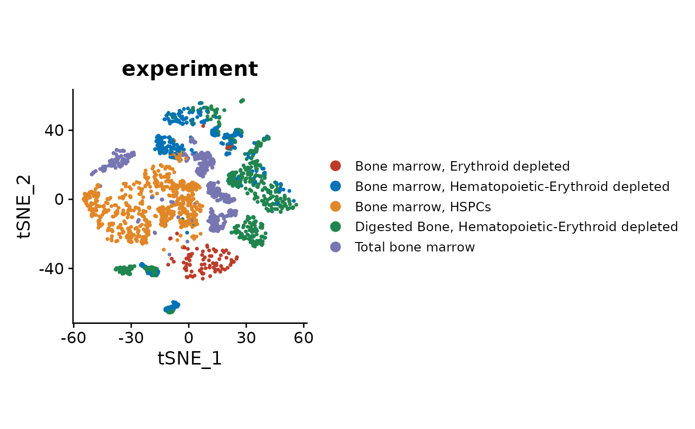
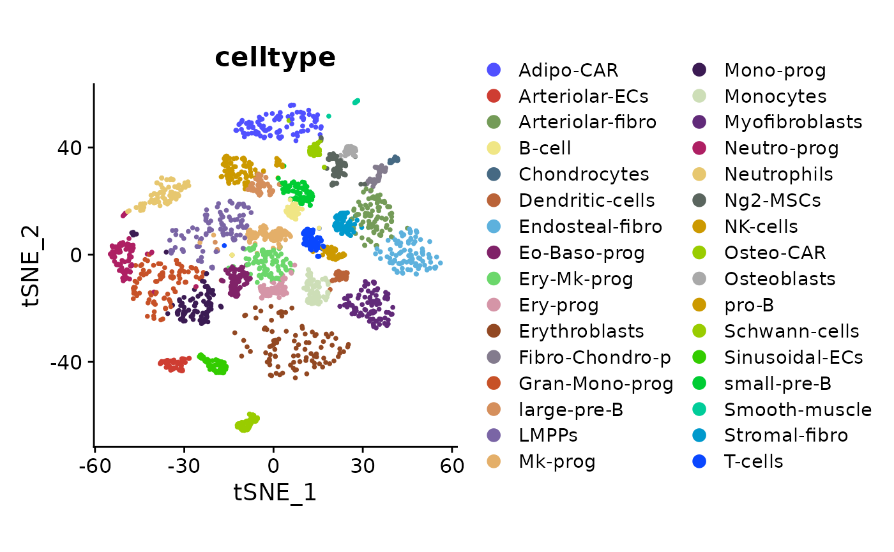

Introduction
Assignment of cell type labels to scRNA-seq clusters is particularly difficult when unexpected or poorly described populations are present. There are fully automated algorithms for cell type annotation, but sometimes a more in-depth analysis is helpful in understanding the captured cells. This is an example of exploratory cell type analysis using clustermole, starting with a Seurat object.
The dataset used in this example contains hematopoietic and stromal bone marrow populations (Baccin et al.). This experiment was selected because it includes both well-known as well as rare cell types.
Load data
Load relevant packages.
Download the dataset, which is stored as a Seurat object. It was subset for this tutorial to reduce the size and speed up processing.
so <- readRDS(url("https://osf.io/cvnqb/download"))
so
#> An object of class Seurat
#> 16701 features across 2821 samples within 1 assay
#> Active assay: RNA (16701 features, 2872 variable features)
#> 2 layers present: counts, data
#> 3 dimensional reductions calculated: pca, tsne, umapCheck the experiment labels on a tSNE visualization, as shown in the original publication (original figure).
DimPlot(so, reduction = "tsne", group.by = "experiment", shuffle = TRUE) +
theme(aspect.ratio = 1, legend.text = element_text(size = rel(0.7))) +
scale_color_nejm()
Check the cell type labels on a tSNE visualization.
DimPlot(so, reduction = "tsne", group.by = "celltype", shuffle = TRUE) +
theme(aspect.ratio = 1, legend.text = element_text(size = rel(0.8))) +
scale_color_igv()
Set the Seurat object cell identities to the predefined cell type labels for the next steps.
Idents(so) <- "celltype"
levels(Idents(so))
#> [1] "Adipo-CAR" "Arteriolar-ECs" "Arteriolar-fibro" "B-cell"
#> [5] "Chondrocytes" "Dendritic-cells" "Endosteal-fibro" "Eo-Baso-prog"
#> [9] "Ery-Mk-prog" "Ery-prog" "Erythroblasts" "Fibro-Chondro-p"
#> [13] "Gran-Mono-prog" "large-pre-B" "LMPPs" "Mk-prog"
#> [17] "Mono-prog" "Monocytes" "Myofibroblasts" "Neutro-prog"
#> [21] "Neutrophils" "Ng2-MSCs" "NK-cells" "Osteo-CAR"
#> [25] "Osteoblasts" "pro-B" "Schwann-cells" "Sinusoidal-ECs"
#> [29] "small-pre-B" "Smooth-muscle" "Stromal-fibro" "T-cells"Marker gene overlaps
One type of analysis facilitated by clustermole is based on comparison of marker genes.
We can start with the B-cells, which is a well-defined population used in many studies.
B-cells
Find markers for the B-cell cluster.
b_markers_df <- FindMarkers(so, ident.1 = "B-cell", min.pct = 0.2, only.pos = TRUE, verbose = FALSE)
nrow(b_markers_df)
#> [1] 1631We can subset to just the best 25 markers.
b_markers <- head(rownames(b_markers_df), 25)
b_markers
#> [1] "Ms4a1" "Fcmr" "Cd74" "Ly6d"
#> [5] "Gm43603" "Bank1" "2010309G21Rik" "Fcer2a"
#> [9] "H2-DMb2" "H2-Eb1" "Cd79a" "H2-Aa"
#> [13] "Tnfrsf13c" "Ltb" "Cd79b" "Ccr7"
#> [17] "Fcrl1" "Spib" "Siglecg" "Cd83"
#> [21] "Fcrla" "Srpk3" "Cd22" "Cxcr5"
#> [25] "H2-Ab1"Check the overlap of B-cell markers with all clustermole cell type signatures.
overlaps_tbl <- clustermole_overlaps(genes = b_markers, species = "mm")Check the top scoring cell types corresponding to the B-cell cluster markers.
head(overlaps_tbl, 15)
#> # A tibble: 15 × 10
#> celltype_full
#> <chr>
#> 1 follicular_B-cells | SaVanT
#> 2 B cell (Alzheimer's disease) [PMID:34103079] | Brain | MM | CellMarker
#> 3 B Cell (Renal Cell Carcinoma) | Kidney | HS | CellMatch
#> 4 B cell (Renal cell carcinoma) [PMID:30093597] | Kidney | HS | CellMarker
#> 5 B cells | Immune system | MM | PanglaoDB
#> 6 IMGN_B_Fo_LN | SaVanT
#> 7 IMGN_B_Fo_MLN | SaVanT
#> 8 IMGN_B_T1_Sp | SaVanT
#> 9 FAN_EMBRYONIC_CTX_BRAIN_B_CELL | HS | MSigDB
#> 10 IMGN_B_Fo_PC | SaVanT
#> 11 IMGN_B_Fo_Sp | SaVanT
#> 12 IMGN_B_FrE_BM | SaVanT
#> 13 IMGN_B_FrF_BM | SaVanT
#> 14 IMGN_B_MZ_Sp | SaVanT
#> 15 IMGN_B_T2_Sp | SaVanT
#> # ℹ 9 more variables: db <chr>, species_original <chr>, species <chr>,
#> # organ <chr>, celltype <chr>, n_genes <int>, overlap <dbl>, p_value <dbl>,
#> # fdr <dbl>As would be expected for a well-defined population, the top results are various B-cell populations. We can repeat this process for other populations that are more obscure.
Adipo-CAR
Find markers for the Adipo-CAR cluster. These are Cxcl12-abundant reticular (CAR) cells expressing adipocyte-lineage genes.
acar_markers_df <- FindMarkers(so, ident.1 = "Adipo-CAR", min.pct = 0.2, only.pos = TRUE, verbose = FALSE)
acar_markers <- head(rownames(acar_markers_df), 25)
acar_markers
#> [1] "Adipoq" "Kng1" "Kng2" "Esm1"
#> [5] "Cxcl12" "Lpl" "Gdpd2" "Agt"
#> [9] "Dpep1" "Lepr" "Fst" "Chrdl1"
#> [13] "Pdzrn4" "Kitl" "Cxcl14" "Ccl19"
#> [17] "Ptx3" "Ackr4" "1500009L16Rik" "Gas6"
#> [21] "Serpina12" "C4b" "Gm4951" "Fbln5"
#> [25] "Wisp2"Check the overlap of Adipo-CAR markers with all cell type signatures.
overlaps_tbl <- clustermole_overlaps(genes = acar_markers, species = "mm")Check the top scoring cell types for the Adipo-CAR cluster.
head(overlaps_tbl, 15)
#> # A tibble: 15 × 10
#> # ℹ 10 more variables: celltype_full <chr>, db <chr>, species_original <chr>,
#> # species <chr>, organ <chr>, celltype <chr>, n_genes <int>, overlap <dbl>,
#> # p_value <dbl>, fdr <dbl>The top results are more diverse than for B-cells, but related populations are among the top candidates.
Osteoblasts
Find markers for the Osteoblasts cluster.
o_markers_df <- FindMarkers(so, ident.1 = "Osteoblasts", min.pct = 0.2, only.pos = TRUE, verbose = FALSE)
o_markers <- head(rownames(o_markers_df), 25)
o_markers
#> [1] "Cpz" "Smpd3" "Col22a1" "Ifitm5"
#> [5] "Mlip" "Bglap" "Lipc" "Cgref1"
#> [9] "Col13a1" "Entpd3" "Fabp3" "Bglap2"
#> [13] "Cthrc1" "Bglap3" "Col11a2" "Rerg"
#> [17] "Cdo1" "Car3" "Slc36a2" "RP23-457J22.1"
#> [21] "Col24a1" "Col11a1" "Bmp3" "Cadm1"
#> [25] "Satb2"Check overlap of Osteoblasts markers with all cell type signatures.
overlaps_tbl <- clustermole_overlaps(genes = o_markers, species = "mm")Check the top scoring cell types for the Osteoblasts cluster.
head(overlaps_tbl, 15)
#> # A tibble: 15 × 10
#> # ℹ 10 more variables: celltype_full <chr>, db <chr>, species_original <chr>,
#> # species <chr>, organ <chr>, celltype <chr>, n_genes <int>, overlap <dbl>,
#> # p_value <dbl>, fdr <dbl>The top results are noisier than for B-cells, but the appropriate populations are listed.
Enrichment of markers
Rather than comparing marker genes, it’s also possible to run enrichment of cell type signatures across all genes. This avoids having to define an optimal set of markers.
Calculate the average expression levels for each cell type.
avg_exp_mat <- AverageExpression(so)Convert to a regular matrix and log-transform.
Preview the expression matrix.
avg_exp_mat[1:5, 1:5]
#> Adipo-CAR Arteriolar-ECs Arteriolar-fibro B-cell Chondrocytes
#> Sox17 0.0000000 2.5800606 0.0000000 0.0000000 0.00000000
#> Mrpl15 0.4315376 0.5284282 0.3304569 0.8481054 0.07307574
#> Lypla1 0.1990537 0.4477973 0.2448583 0.6352917 0.09397463
#> Gm37988 0.0000000 0.0000000 0.0000000 0.0000000 0.00000000
#> Tcea1 0.5620502 0.7077588 0.6135480 0.7798060 0.52126901Run enrichment of all cell type signatures across all clusters.
enrich_tbl <- clustermole_enrichment(expr_mat = avg_exp_mat, species = "mm")B-cells
Check the most enriched cell types for the B-cell cluster.
enrich_tbl |>
filter(cluster == "B-cell") |>
head(15)
#> # A tibble: 15 × 10
#> cluster
#> <chr>
#> 1 B-cell
#> 2 B-cell
#> 3 B-cell
#> 4 B-cell
#> 5 B-cell
#> 6 B-cell
#> 7 B-cell
#> 8 B-cell
#> 9 B-cell
#> 10 B-cell
#> 11 B-cell
#> 12 B-cell
#> 13 B-cell
#> 14 B-cell
#> 15 B-cell
#> # ℹ 9 more variables: celltype_full <chr>, score <dbl>, score_rank <int>,
#> # db <chr>, species_original <chr>, species <chr>, organ <chr>,
#> # celltype <chr>, n_genes <int>As with the previous analysis, the top results are various B-cell populations.
Adipo-CAR
Check the most enriched cell types for the Adipo-CAR cluster.
enrich_tbl |>
filter(cluster == "Adipo-CAR") |>
head(15)
#> # A tibble: 15 × 10
#> cluster
#> <chr>
#> 1 Adipo-CAR
#> 2 Adipo-CAR
#> 3 Adipo-CAR
#> 4 Adipo-CAR
#> 5 Adipo-CAR
#> 6 Adipo-CAR
#> 7 Adipo-CAR
#> 8 Adipo-CAR
#> 9 Adipo-CAR
#> 10 Adipo-CAR
#> 11 Adipo-CAR
#> 12 Adipo-CAR
#> 13 Adipo-CAR
#> 14 Adipo-CAR
#> 15 Adipo-CAR
#> # ℹ 9 more variables: celltype_full <chr>, score <dbl>, score_rank <int>,
#> # db <chr>, species_original <chr>, species <chr>, organ <chr>,
#> # celltype <chr>, n_genes <int>Osteoblasts
Check the most enriched cell types for the Osteoblasts cluster.
enrich_tbl |>
filter(cluster == "Osteoblasts") |>
head(15)
#> # A tibble: 15 × 10
#> cluster
#> <chr>
#> 1 Osteoblasts
#> 2 Osteoblasts
#> 3 Osteoblasts
#> 4 Osteoblasts
#> 5 Osteoblasts
#> 6 Osteoblasts
#> 7 Osteoblasts
#> 8 Osteoblasts
#> 9 Osteoblasts
#> 10 Osteoblasts
#> 11 Osteoblasts
#> 12 Osteoblasts
#> 13 Osteoblasts
#> 14 Osteoblasts
#> 15 Osteoblasts
#> # ℹ 9 more variables: celltype_full <chr>, score <dbl>, score_rank <int>,
#> # db <chr>, species_original <chr>, species <chr>, organ <chr>,
#> # celltype <chr>, n_genes <int>